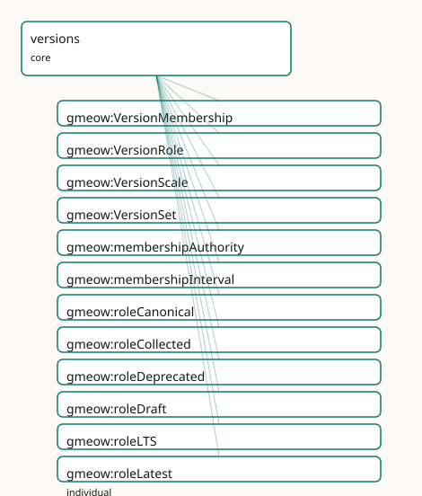

GMEOW Versions Module
- IRI: https://blackcatinformatics.ca/gmeow/slices/versions
- Tier: core
Group: core
What This Slice Covers
This slice owns 26 terms and contributes 1 mapping or projection rows. Use it when its terms match the native fact you want to preserve; use the linkage tables to see how those facts leave GMEOW for consumer vocabularies.
Dependencies
Consumers
- Version lineage for software, languages, creative works, and the ontology's own releases.
Local Map

Terms
Classes
| Term | Label | Definition |
|---|---|---|
gmeow:VersionMembership |
Version Membership | A reified, standpoint-scoped claim that a concrete entity belongs to a version set with a particular role and/or scale — an observation in the universal claim... |
gmeow:VersionRole |
Version Role | A role or status that an entity holds within a version set according to an authority — a VALUE, never an Entity subclass. Standpoint-scoped: 'latest' according... |
gmeow:VersionScale |
Version Scale | The magnitude scale of a version change — a VALUE, never an Entity subclass. Used for SemVer-style classification and analogous schemes in non-software domains. |
gmeow:VersionSet |
Version Set | A first-class information object representing a version family or release lineage — the set of all concrete artifacts that are versions of a common stable enti... |
Properties
| Term | Label | Definition |
|---|---|---|
gmeow:membershipAuthority |
membership authority | The agent or standpoint that asserts this version membership and its role — a project maintainer, a package registry, a publisher, a curator, or a self-asserti... |
gmeow:membershipInterval |
membership interval | The time interval over which this version membership / role claim holds. A relator carries its period this way (matching gmeow:usageInterval, gmeow:taggingInte... |
gmeow:versionFingerprint |
version fingerprint | A content fingerprint of the versioned entity — a hash, SWHID, content digest, or semantic identifier. Broader than gmeow:contentDigest (which is byte-exact an... |
gmeow:versionMember |
version member | The concrete entity that participates in a version set via this membership — a software release, a book edition, an email variant, a dataset snapshot. Function... |
gmeow:versionRole |
version role | The role or status classification this membership asserts for the member within the set — canonical, variant, latest, stable, LTS, deprecated, yanked, draft, p... |
gmeow:versionScale |
version scale | The scale classification of this membership — trivial, minor, major. NON-FUNCTIONAL: different authorities or schemes may classify the same change differently;... |
gmeow:versionSet |
version set | The version set / lineage to which this membership belongs. Functional per relator: one set per VersionMembership. |
Individuals
| Term | Label | Definition |
|---|---|---|
gmeow:roleCanonical |
canonical | The canonical version role — a status that a versioned artifact occupies in its release lifecycle. |
gmeow:roleCollected |
collected | The collected version role — a status that a versioned artifact occupies in its release lifecycle. |
gmeow:roleDeprecated |
deprecated | The deprecated version role — a status that a versioned artifact occupies in its release lifecycle. |
gmeow:roleDraft |
draft | The draft version role — a status that a versioned artifact occupies in its release lifecycle. |
gmeow:roleLTS |
long-term support (LTS) | The lts version role — a status that a versioned artifact occupies in its release lifecycle. |
gmeow:roleLatest |
latest | The latest version role — a status that a versioned artifact occupies in its release lifecycle. |
gmeow:rolePublished |
published | The published version role — a status that a versioned artifact occupies in its release lifecycle. |
gmeow:roleRevised |
revised | The revised version role — a status that a versioned artifact occupies in its release lifecycle. |
gmeow:roleStable |
stable | The stable version role — a status that a versioned artifact occupies in its release lifecycle. |
gmeow:roleVariant |
variant | The variant version role — a status that a versioned artifact occupies in its release lifecycle. |
gmeow:roleWithdrawn |
withdrawn | The withdrawn version role — a status that a versioned artifact occupies in its release lifecycle. |
gmeow:roleYanked |
yanked | The yanked version role — a status that a versioned artifact occupies in its release lifecycle. |
gmeow:scaleMajor |
major | The major version scale — a magnitude category used to characterize the impact of a version change. |
gmeow:scaleMinor |
minor | The minor version scale — a magnitude category used to characterize the impact of a version change. |
gmeow:scaleTrivial |
trivial | The trivial version scale — a magnitude category used to characterize the impact of a version change. |
Linkages
- Rows: 1
- Projection profiles: -
- External vocabularies:
doap
| Source | Kind | Profile | Predicate/Relation | Target | Evidence |
|---|---|---|---|---|---|
gmeow:VersionSet |
equivalence | - |
skos:closeMatch | doap:Project | gmeow-versions.sssom.tsv; gmeow:eqVersions003; confidence 0.6 |
Guide
Versions — modelling & interoperability guide
Most vocabularies model versions as ad-hoc attributes: schema:version on a
CreativeWork, SemVer strings on a DOAP release, dcterms:isVersionOf between
dataset snapshots. Each domain reinvents its own taxonomy: StableRelease,
YankedCrate, DefinitiveEdition, CanonicalEmail.
GMEOW refuses this anti-pattern. "Latest", "stable", "yanked", "canonical",
"definitive" are not intrinsic types — they are standpoint-scoped claims
asserted by an authority (a registry, a publisher, a project, a curator). The
same artifact may be latest to npm and deprecated to a downstream mirror.
Both claims coexist without privilege (Principle 9).
Decision tree: which property to use?
| Situation | Use | Example |
|---|---|---|
| A concrete artifact belongs to a stable lineage | versionOf |
release-2.0.0 versionOf my-library |
| A concrete edition of a creative work | editionOf |
annotated-edition editionOf original-novel |
| One artifact replaces another | supersedes |
v2.0.0 supersedes v1.1.0 |
| Cross-frame correspondence without merge | counterpartOf |
robot-agent counterpartOf person |
| Derivation/provenance chain | wasDerivedFrom |
translation wasDerivedFrom original |
| Role/status within a version set (reified) | VersionMembership |
membership roleLatest accordingTo registry |
The thin spine (versionOf, editionOf, supersedes, counterpartOf) is
the 80 % flat shortcut. The reified layer (VersionMembership) is promoted
when the role claim itself must carry authority, confidence, temporal scope, or
standpoint indexing.
The reified layer: VersionMembership
A VersionMembership is an Observation + Relator in the universal claim
stack. It mediates three things:
versionMember— the concrete artifact (observedFeature)versionSet— the lineage it belongs toversionRole/versionScale— the classification, asQualityValueindividualsmembershipAuthority(vantage) — who asserts this rolemembershipInterval— when the claim holds
@prefix gmeow: <https://blackcatinformatics.ca/gmeow/> .
@prefix ex: <https://example.org/versions/> .
ex:myLibrary a gmeow:VersionSet ;
gmeow:name "my-library"@en .
ex:v2_0 a gmeow:SoftwareAgent ;
gmeow:versionOf ex:myLibrary ;
gmeow:versionLabel "2.0.0" .
ex:memLatest a gmeow:VersionMembership ;
gmeow:versionMember ex:v2_0 ;
gmeow:versionSet ex:myLibrary ;
gmeow:versionRole gmeow:roleLatest ;
gmeow:membershipAuthority ex:npmRegistry .
ex:memLTS a gmeow:VersionMembership ;
gmeow:versionMember ex:v2_0 ;
gmeow:versionSet ex:myLibrary ;
gmeow:versionRole gmeow:roleLTS ;
gmeow:membershipAuthority ex:projectMaintainer .
★ Two memberships on the same artifact, from two authorities, with two
roles — both are first-class and co-equal.
Temporal scoping: never overwrite
When a release shifts from latest to deprecated, do not overwrite the
old membership. Preserve history by either:
- Closing the interval — set an end date on
membershipInterval. - Minting a fresh membership — create a new
VersionMembershipfor the new role, leaving the old one intact.
A deprecated or yanked release may carry gmeow:displayable false so it is
suppressed from consumer projections, but it is never deleted (Principle 10).
# Old membership retained
ex:memLatest a gmeow:VersionMembership ;
gmeow:versionMember ex:v1_1 ;
gmeow:versionSet ex:myLibrary ;
gmeow:versionRole gmeow:roleLatest ;
gmeow:membershipAuthority ex:npmRegistry .
# New membership for the deprecated state
ex:memDeprecated a gmeow:VersionMembership ;
gmeow:versionMember ex:v1_1 ;
gmeow:versionSet ex:myLibrary ;
gmeow:versionRole gmeow:roleDeprecated ;
gmeow:membershipAuthority ex:npmRegistry ;
gmeow:displayable false .
Separation from attestation layer
VersionMembership records what role is asserted and by whom.
It does not embed the cryptographic or signed evidence for that assertion.
Attestation evidence — release signatures, SLSA provenance, DOI/SWHID
assertions, yanked-release notices, registry attestations — belongs in the
future attestation layer and composes with VersionMembership by
linking evidence to the same artifacts. A version role may be attested by a
registry, but the attestation is evidence for the role claim, not the role
itself.
# : the role claim
ex:memLatest a gmeow:VersionMembership ;
gmeow:versionRole gmeow:roleLatest ;
gmeow:membershipAuthority ex:npmRegistry .
# : the attestation evidence
ex:sig a gmeow:AttestationArtifact ;
gmeow:artifactMediaType "application/vnd.dsse+json" ;
gmeow:hasSignature [ a gmeow:CryptographicSignature ] ;
gmeow:wasAttributedTo ex:npmRegistry .
Value vocabularies: open, not a fence
VersionRole and VersionScale are gufo:QualityValue subclasses. The seed
list is an anchor, not a fence:
| Seed | Meaning |
|---|---|
roleCanonical |
The canonical/reference variant |
roleVariant |
A non-canonical variant |
roleLatest |
The most recent release |
roleStable |
Considered stable by the authority |
roleLTS |
Long-term support commitment |
roleDeprecated |
Discouraged but retained |
roleYanked |
Withdrawn with urgency |
roleDraft |
Unpublished / in-progress |
rolePublished |
Publicly available |
roleRevised |
A revised edition |
roleCollected |
Part of a collected volume |
roleWithdrawn |
Formally withdrawn |
scaleTrivial |
Patch-level change |
scaleMinor |
Backward-compatible change |
scaleMajor |
Breaking change |
Domain-specific values (e.g. roleNightly, roleReleaseCandidate) are minted
as fresh individuals carrying rdfs:label.
Projections
The mapping compiler generates SSSOM/EDOAL/SPARQL projections from
mapping-dsl/. Cross-vocabulary mappings include:
| GMEOW | schema.org | DOAP | Wikidata |
|---|---|---|---|
VersionSet |
— | doap:Project (lineage) |
— |
versionOf |
— | — | P548 (version type) |
versionLabel |
schema:version |
doap:revision |
— |
versionRole |
— | — | P548 qualifier |
supersedes |
— | — | P1365 (replaces) |
★ Projections are lossy by design. A "latest" selection rule lives in the
importer/solver, never as an OWL axiom (Principle 12).